I developed a modular Python application to design, visualise and review missions for unmanned aircraft systems — from remotely piloted aircraft to other UAS and drone operations.
Advanced Aerospace Vehicle Design · Unmanned Aircraft Systems
Scenario
MQ-9 maritime-surveillance study · May 2026
01 — THE CHALLENGE
Plan unmanned-aircraft missions around constraints, not just waypoints
The application grew from an academic maritime-surveillance scenario using the MQ-9 Predator B as a reference platform. I then structured the software around reusable mission-planning functions — route geometry, mission points, airspace information, flight profiles and safety considerations — rather than tying the whole workflow to a single aircraft.
Although the original case study uses an RPAS, the application is intended as a broader planning environment for UAS and drones. The aircraft, mission parameters, route and operational assumptions can be adapted to different unmanned-aircraft scenarios. It remains an engineering and planning aid, not an operational flight-release or airspace-approval system.
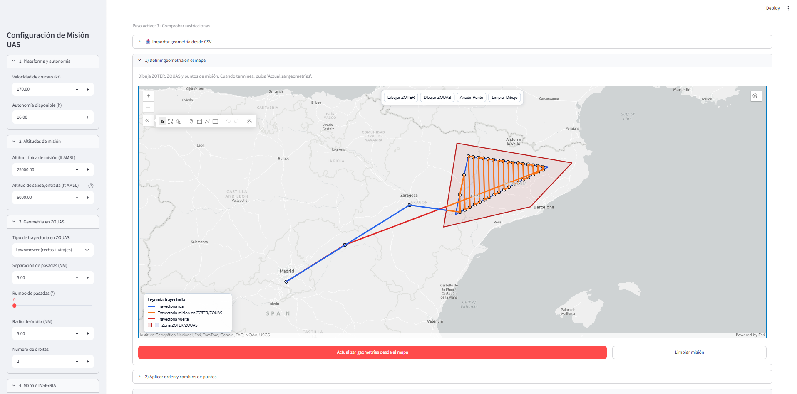
Application interface showing the planned route for the simulated mission.
02 — PLANNING WORKFLOW
From mission definition to an inspectable route
01 / DEFINEMission objective, aircraft assumptions and operating framework
02 / CONTEXTUALISEENAIRE INSIGNIA layers, AIP references and airspace constraints
03 / DESIGNMission points, route patterns, waypoints and flight profiles
04 / REVIEWRoute checks, airspace conflicts and qualitative risk assessment
The workflow supports engineering analysis and preparation. Current aeronautical publications, NOTAM, geozones, authorisations and operational procedures must always be checked independently.
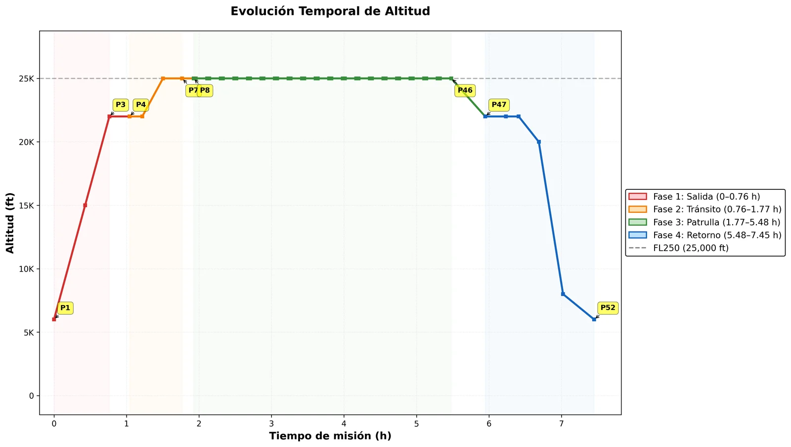
I used this profile to review climb, transit, patrol, and return phases. It contains no route map or geographic coordinates.
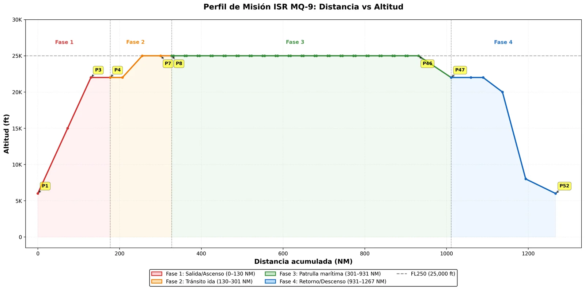
I compared altitude with cumulative distance to inspect the vertical profile across the simulated mission phases.
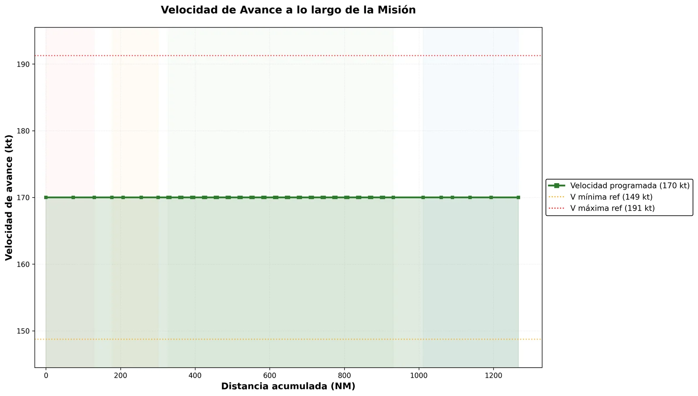
This plot let me inspect the planned forward-speed profile against the report's reference limits.
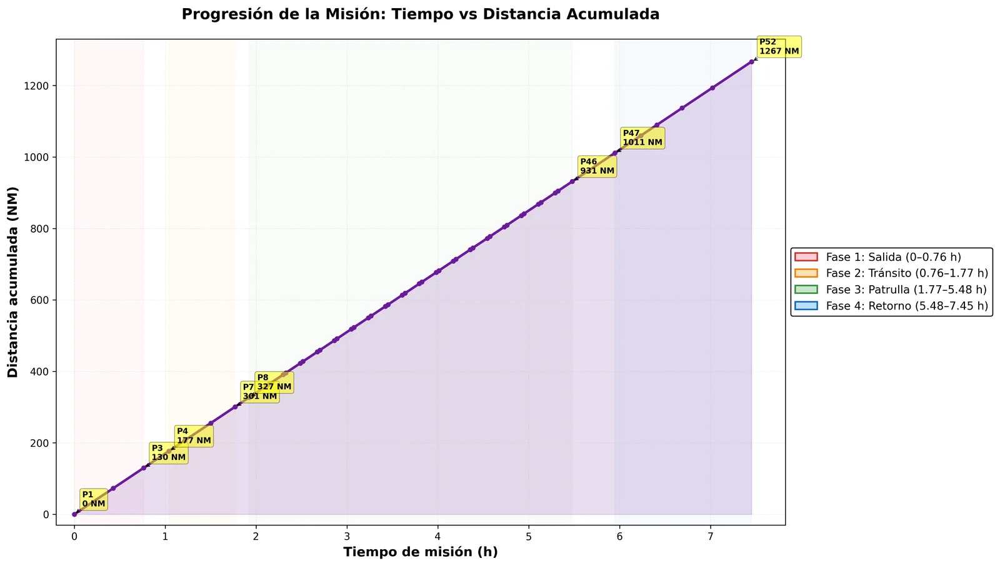
I used time against distance to review phase transitions and waypoint progression without publishing a geographic route.
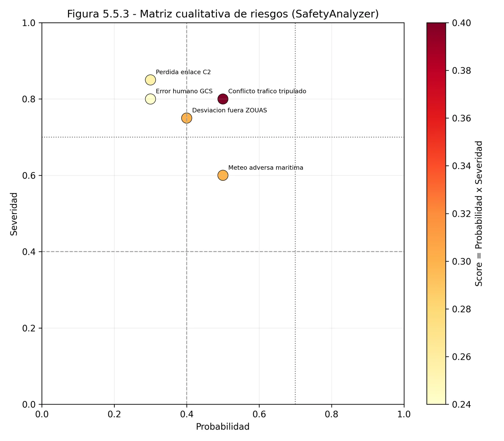
I used this qualitative matrix to organise example hazards by probability and severity; it is not an operational safety assessment.
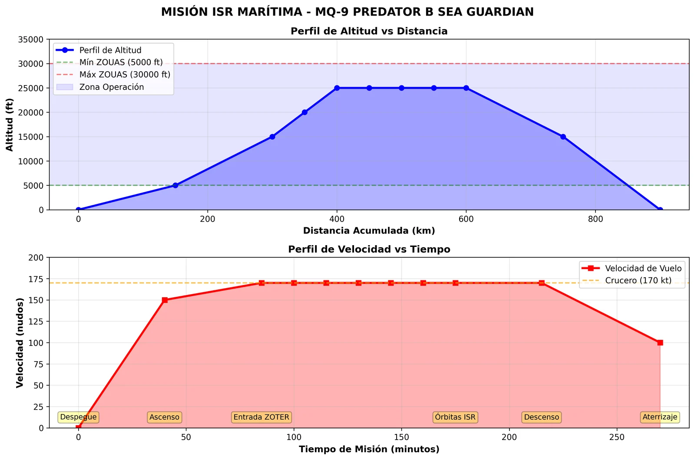
This report overview places the simulated altitude and speed profiles side by side for comparison.
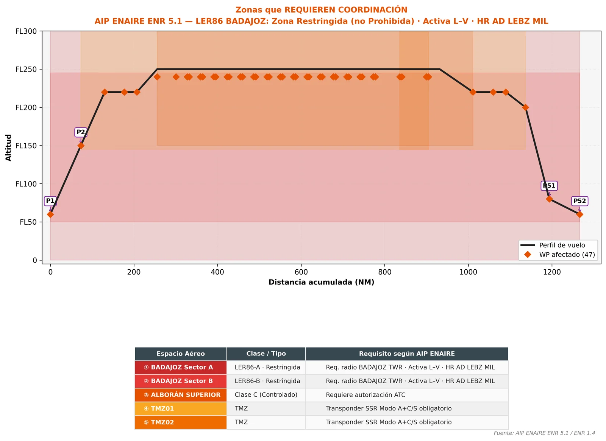
I used this coordination plot to examine the planned profile against the report's airspace and phase constraints.
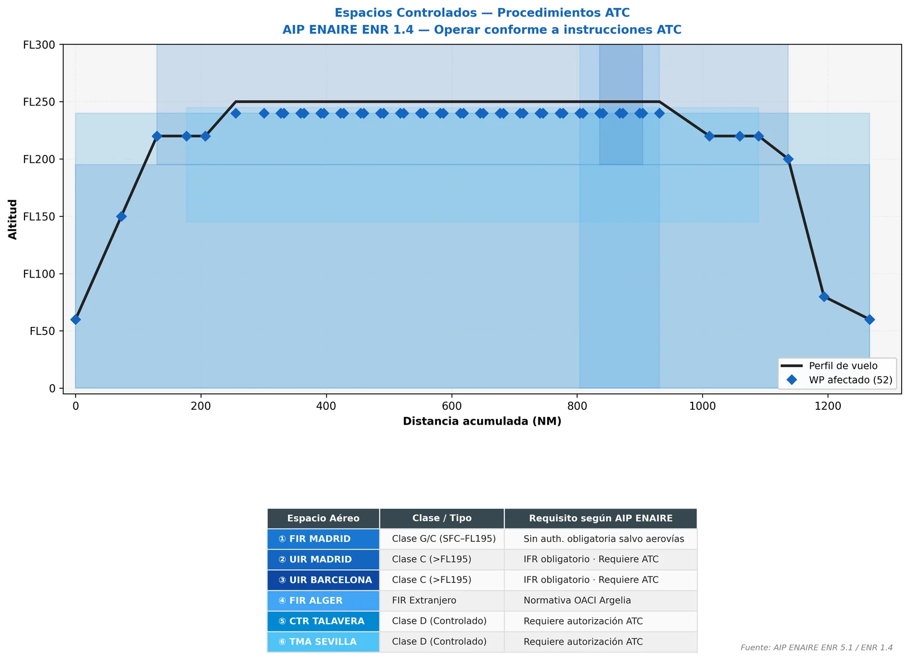
This companion chart summarises the academic profile and the constraints represented in the report.
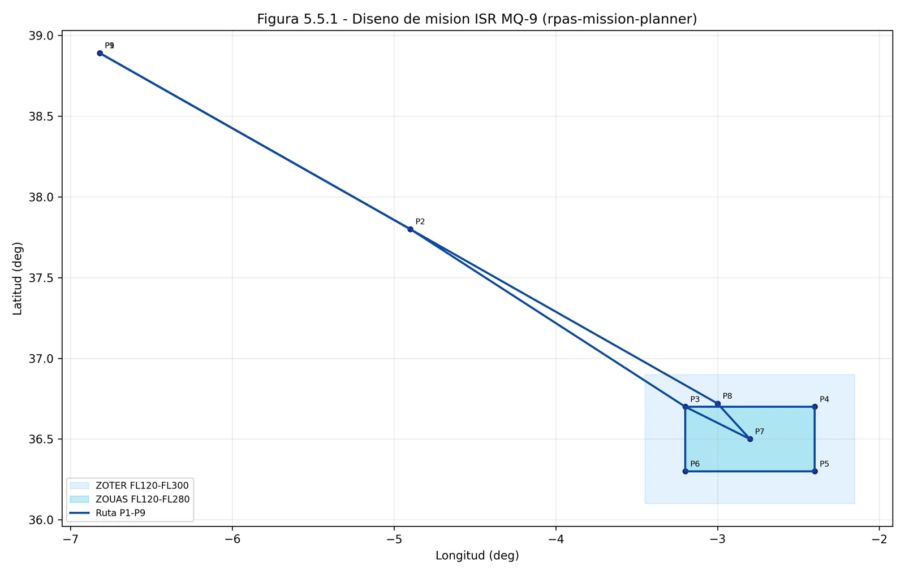
I include the map as a record of the coursework scenario, not as current aeronautical information or a route for execution.
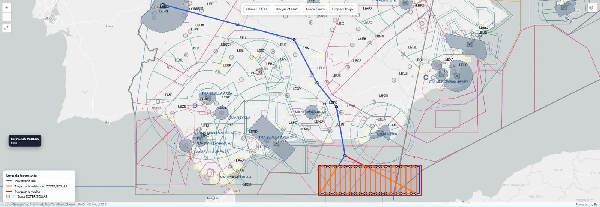
This is the geographic map used in my report. Its route and airspace depiction are historical academic material and are not operationally valid.
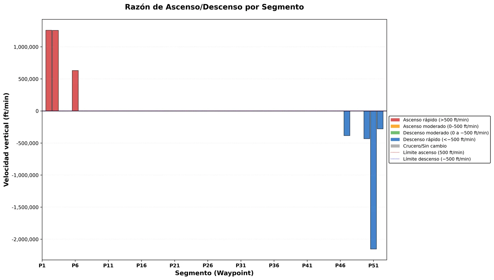
The report's climb/descent ratio plot contains extreme values. I include it as source output, but it needs recalculation before interpretation.
03 — APPLICATION CAPABILITIES
One workspace, several connected planning tools
The application brings together the main stages of an unmanned-aircraft mission study. Rather than treating the map as the whole plan, it links geographic definition, route construction, flight parameters, airspace context and safety review. A route can be created from manually placed points or generated as a coverage pattern; its geometry is then translated into an ordered waypoint sequence that can be inspected alongside the planned vertical profile and timing.
Interactive mission map
Define and edit mission points, assign roles and phases, and draw the boundaries of the intended operating area directly on the map. The map brings the planned route together with aeronautical context from ENAIRE INSIGNIA, helping the user inspect where the mission sits in relation to displayed airspace structures and aerodromes.
Route and waypoint design
Build a route from ordered mission points or generate repeatable patterns for area coverage. The lawnmower generator, for example, uses parameters such as track spacing and pass heading to create a sequence of parallel legs and turns inside the selected area. Circular orbits and combined patterns are also supported. The resulting geometry can be reviewed and adjusted before it is transferred to the waypoint workflow.
Flight profile and planning data
Associate the route with flight-plan commands, altitude and speed targets, then inspect the distance and time associated with each leg. The waypoint table exposes both individual-leg values and cumulative mission figures, while the profile plot makes the vertical plan easier to assess over distance or elapsed time. The trajectory workspace also includes an ICAO-format flight-plan generator and downloadable planning output.
Airspace and AIP awareness
Display INSIGNIA geographic layers and inspect airspace-related information. A local SQLite catalogue indexes AIP documents, rule profiles and references to airspace zones to support source consultation.
Safety and operating areas
Define lateral and vertical limits for volumetric areas such as ZOUAS and ZOTER, assess route conflicts, and organise hazards in a qualitative probability-versus-severity risk matrix with mitigation notes.
Mission review and visualisation
Bring route metrics, waypoint data, altitude and speed profiles, airspace context and safety observations together for a more traceable mission review.
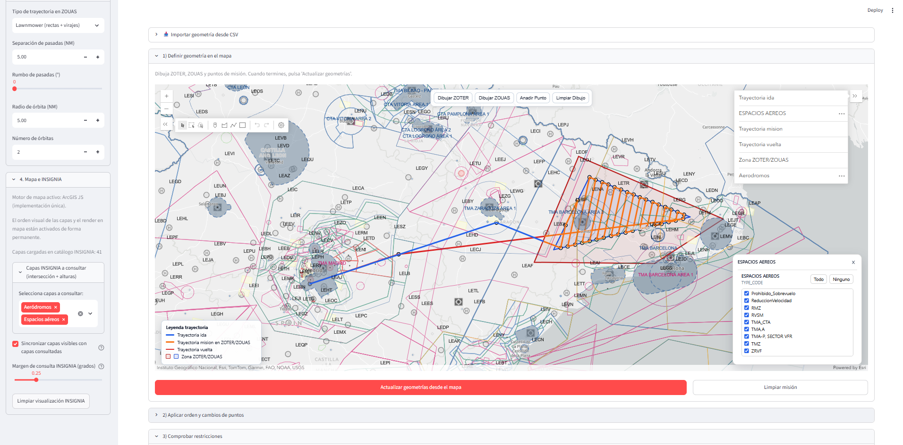
Operating-area geometry and airspace context. This view combines the mission route with a generated lawnmower pattern and the ZOTER/ZOUAS areas drawn for the scenario. The map also displays selected INSIGNIA layers, such as airspace structures and aerodromes, so the route can be visually reviewed against the available geographic context. Track spacing, pass heading, orbit radius and orbit count can be configured from the planning panel; the geometry is then refreshed on the map.
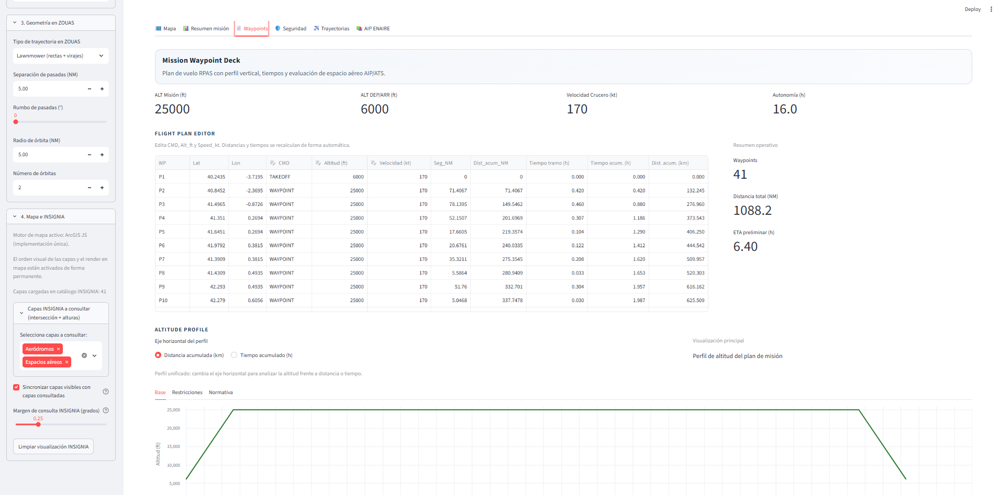
Waypoint-level flight-plan review. The Mission Waypoint Deck turns the route into an ordered flight-plan table. Each row identifies a waypoint and its coordinates, command, planned altitude and speed, together with leg distance, cumulative distance and estimated segment and elapsed times. The summary at the side provides an at-a-glance view of waypoint count, total route distance and preliminary estimated time. Below, the altitude profile can be examined against cumulative distance or elapsed time, making it easier to review climb, cruise and descent transitions. Values shown here belong to the illustrated planning scenario.
Some calculations and rule checks depend on user-entered assumptions, the available data layers and the state of the local AIP catalogue. Outputs are decision-support information for study, not an automated operational authorisation.
04 — APPLICATION & SOFTWARE ARCHITECTURE
A modular application for the complete mission-planning workflow
I built the application in Python with a Streamlit interface and a modular codebase. Mission logic, route generation, flight-profile calculations, waypoint compliance, safety analysis, airspace-data access, parsing and visualisation are organised into separate components. This separation makes the planning workflow easier to maintain and allows individual capabilities to evolve without coupling every feature to the user interface.
The interface is organised into six working areas: an interactive map and mission-point editor; a mission summary; a waypoint and flight-plan editor; safety analysis; trajectory and flight-profile tools; and an AIP/ENAIRE reference database. Together, they connect mission geometry with performance assumptions and the airspace context in which a route is being considered.
For route design, the planner supports user-defined mission points and operational roles, boundary-crossing points, and generated patterns such as lawnmower tracks, circular orbits and combined patterns within a defined operating area. In a typical area-survey workflow, the user first defines the operating geometry and configures the pattern parameters; the generated legs and turns are then represented as route points. This creates a clear link between the shape drawn on the map and the waypoint sequence used for flight-plan review.
The waypoint editor provides a more detailed view of that sequence. Coordinates, flight-plan commands, altitude and speed can be reviewed per waypoint, while leg distance, cumulative distance and estimated times describe how the mission progresses. Editing applicable planning values updates the derived route metrics, and the altitude-profile view can use either cumulative distance or elapsed time as its horizontal axis. This makes it possible to review the geographic and vertical aspects of the same plan without treating them as separate outputs.
The application and its source code are currently private while I continue to refine and improve the system ahead of a future public release.
05 — VALIDATION & LIMITS
Airspace data, aircraft assumptions and operational context need continuous review
The application combines an INSIGNIA interface for retrieving and displaying ENAIRE aeronautical layers with a local SQLite catalogue built from the AIP index. The catalogue organises source documents, rule profiles and detected references to airspace zones; it is intended to make source material easier to consult, not to replace the official publication. The project also includes persistent caching and an offline-oriented mode to reduce repeated requests and improve resilience when the external service is unavailable.
Any operational use would require further verification: confirming the freshness and interpretation of aeronautical data, checking applicable UAS rules for the specific operation, validating aircraft-performance inputs, and independently reviewing route and safety outputs. The software does not itself grant access to controlled or restricted airspace.
This is an academic engineering application. It does not provide an operational clearance, guarantee regulatory compliance, replace an authorised UAS flight-planning process, or establish that a mission is safe to execute.
06 — ENGINEERING TAKEAWAY
Bring mission design, airspace awareness and safety into one workflow
This project allowed me to combine aerospace mission analysis with software development: designing route geometry, handling aeronautical data, modelling flight profiles and making safety-related assumptions visible. Its central idea is to provide a common planning framework for unmanned aircraft — whether described as RPAS, UAS or drones — while keeping the aircraft-specific assumptions and operational limitations explicit.